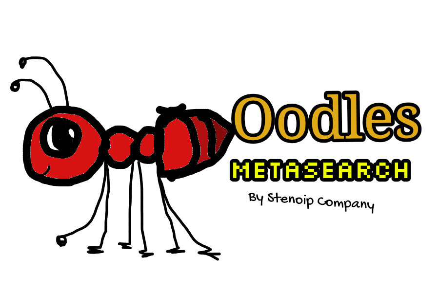

Links
Images
Video
SWC Web Portal
NEW! World Search
Thank you for being a good internet citizen by choosing to turn off AI-Overviews.
Learn more
.
Links
Enter a search query.
Images
Select a query from links.